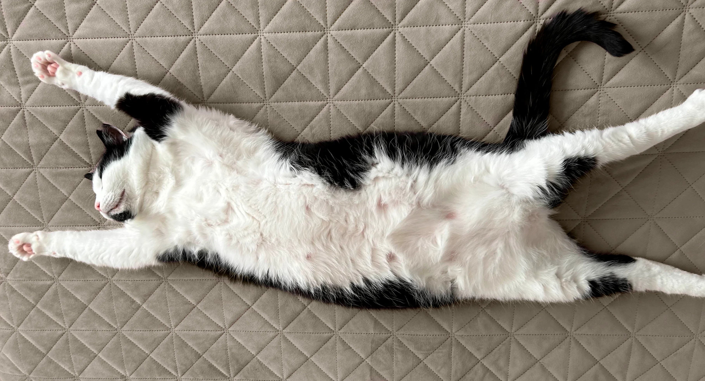
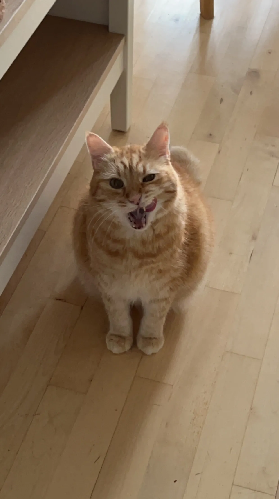
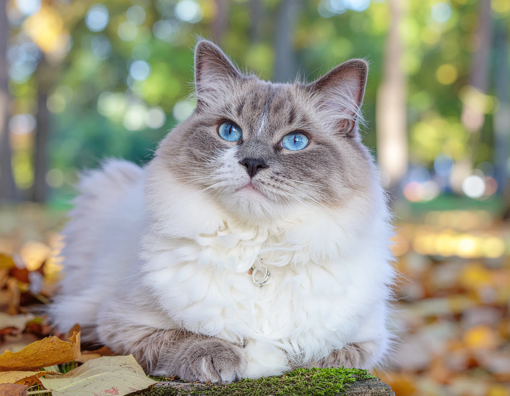

Katte racer
Overblik over de eksisterende katte
Der findes mange forskellige katteracer, hver med deres egne unikke egenskaber og temperament. Maine Coon er kendt for sin store størrelse og venlige natur, mens siameseren ofte beskrives som elegant og meget snakkesalig. Den britiske korthår er rolig og robust, og den norske skovkat har en imponerende pels, der gør den velegnet til koldere klimaer. Uanset race er katte elskede for deres personlighed, charme og selskab.

Min kat
Katte galleri

